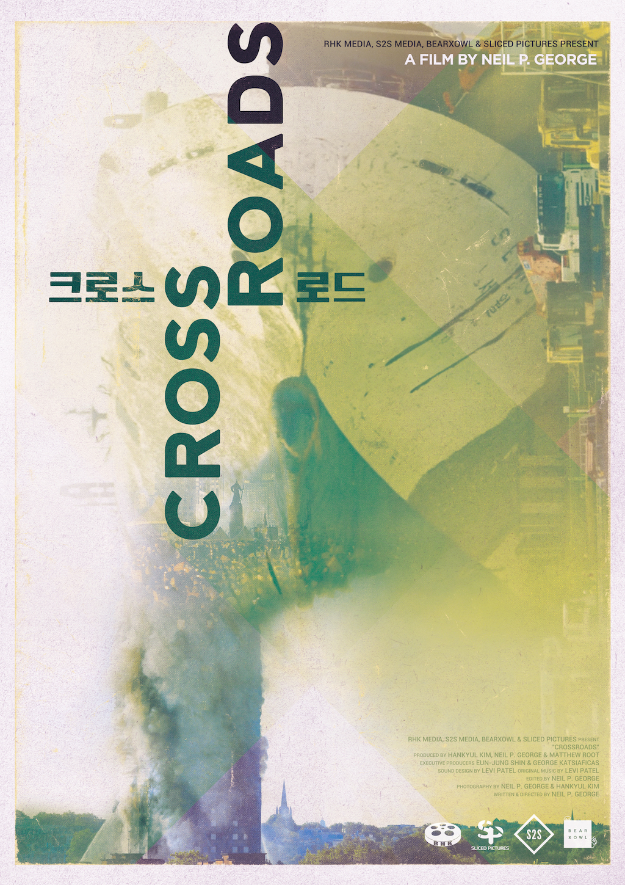
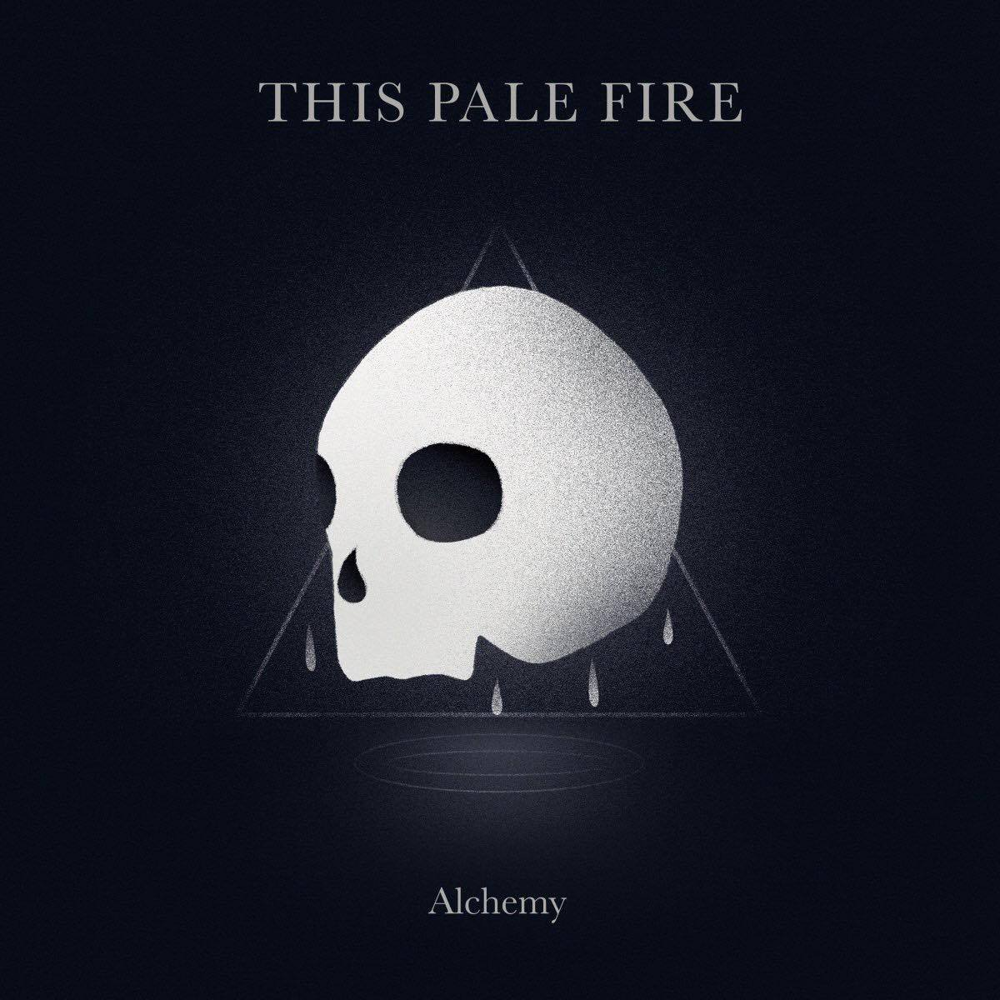
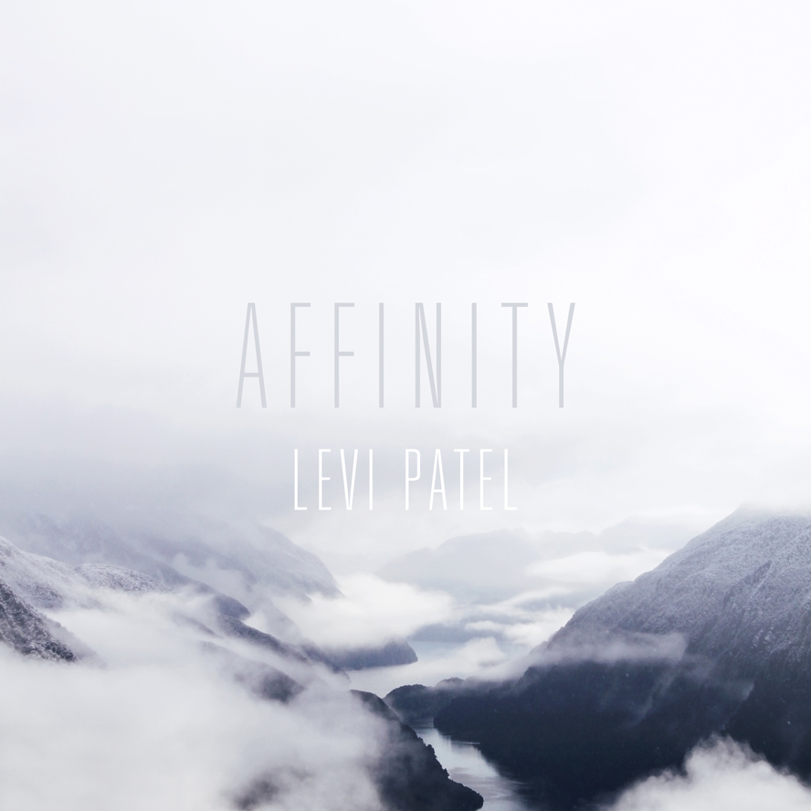
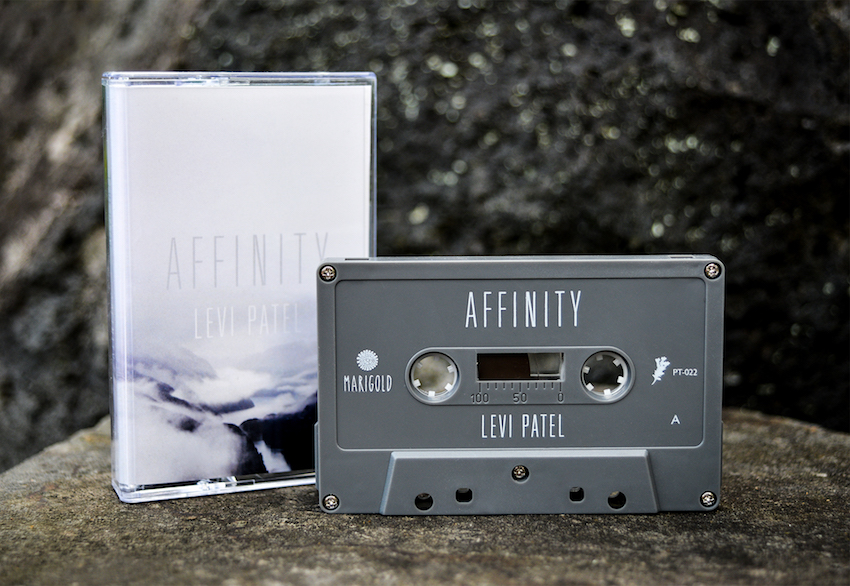
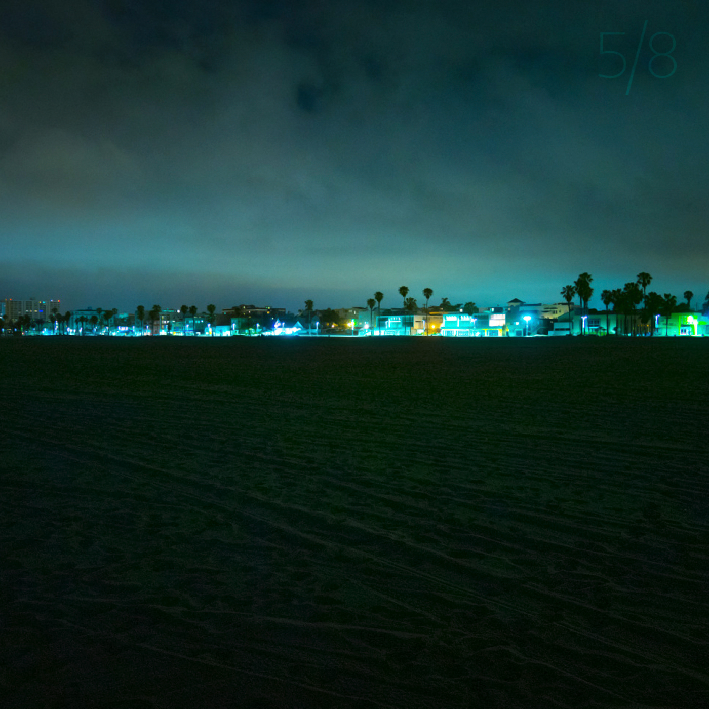

A Shifting Lightness I - Music Release
A Shifting Lightness I is the first instalment in a three-part series exploring themes of Lightness and Memory.

When writing the music, I was living alone for 18 months near a small town in the North of New Zealand. Every morning I would go downstairs into my half-underground recording space, and from where I was writing I could only see through a single window above ground.
Spending so much time alone allowed me to take things slowly and to reflect on my past. It's strange what isolation can do to your thoughts, but it was rewarding to explore those aspects of myself through my music.
A Shifting Lightness I is the first part of that exploration, available now on all digital platforms.
Apr 2019
Crossroads - Feature Documentary
Earlier this year I worked on my second documentary about the Sewol ferry disaster, this time a feature length called Crossroads. Crossroads explores the social and political movements that were catalysed by the disaster, interspersed with powerful monologues by survivors and their relatives.
I was responsible for the soundtrack and sound design, with some of the music made in collaboration with Jesse Woolston.

Thanks to Neil and Han for bringing me onto the team and trusting me completely with the sound and music, to Jesse for his support with the soundtrack, and most of all to the people involved in the disaster for sharing their stories.
Crossroads is available now on Vimeo.
Jul 2018
This Pale Fire - Alchemy (Album Production)
Before making instrumental music I began as a songwriter, so I was thrilled when This Pale Fire asked me to produce a song of his last year. One song turned into two, three, and eventually became his first full length album Alchemy.
I couldn't be more proud of him for crafting such a beautiful and emotionally powerful collection of songs. It was a true pleasure to work on this album.

Listen to Alchemy on Spotify
Dec 2017
Affinity - Full-length Album
When I began this project I was a university student, working every night and every weekend to develop the early ideas that I had for an album. Four years later, after a long process of writing and development, I have finally released the full-length album that I dreamed of making.

- These years came to be
- And she translated into the sky
- For other days
- Closely kept
- Something still
- Since last letters
- What will become of us
- As we fall into static
- Empty calls quiet
- In the dust of a motion
Affinity is out now digitally on Bandcamp, Spotify, iTunes, and other major platforms.
There are also a very limited run of cassette tapes available through Bandcamp, made exquisitely by Prison Tapes.

Apr 2017
Since Last Letters - Single Release
Since Last Letters, the first single from my upcoming album Affinity, is out today. Accompanying the release is this stunning video by Nils Clauss.
Places like Leh are often represented internationally in a very limited way, so in this video we strove to create a more authentic insight into the region. It was important to work with the locals featured to gain a glimpse into the place and the lives lived within - their routines, culture, customs, struggles and laughter.
Stream or download on Spotify, Bandcamp, iTunes, or elsewhere.
Mar 2017
Last Letters - Short Documentary
A journey through loss, space and memory. The film commemorates the victims of the tragic Sewol ferry accident, in which 304 out of 476 passengers and crew members died in 2014.
On the 16th of April 2014 a ferry en route from Incheon to Jeju Island in Korea capsized. 304 out of 476 passengers and crew members died in this tragic accident. This short film follows eight families that lost loved ones that day, and explores the physical and emotional spaces that the tragedy left behind. The film juxtaposes documentary and fictional elements. It shines a light on this still unsolved tragedy and shows the isolation the families feel while they pose for an incomplete family portrait.
I once again collaborated with filmmaker Nils Clauss to create this utterly heartbreaking and beautiful documentary.
The film features a new piece of mine named Since Last Letters.
Dec 2016
5/8 EP with Suren Unka - Release
My first proper collaboration was released today, a four-track EP named 5/8, made with electronic producer and friend Suren Unka.

We also performed the EP live in studio complete with drums, a beautiful piano, and analogue synths.
Thanks for listening.
Aug 2016
This Island is Ours - Feature Documentary
Over the last two months I have been deeply immersed in This Island is Ours as the sound editor, sound mixer, and music composer.
"The territorial dispute between Japan and Korea over the ownership of Dokdo/Takeshima islets is one of the major stumbling blocks in bilateral relations. The dispute however is not limited to state to state relations as in both countries there are citizens' groups actively engaged in protesting, lobbying and educating the public. Who are these people however? What do they do in their everyday life? What motivates them to engage in this kind of activism? How do they see the other side? The usually sensational media coverage of their activities does not answer these questions. This documentary offers some answers by providing the individual activists on both sides with a platform to talk about themselves, their activism and their views of the other country and people."
Once again I worked with Nils Clauss, and this time also alongside Alexander Bukh. Alexander is a scholar of international relations of Northeast Asia. They are currently submitting the film to festivals and plan to release it on Vimeo next year.
I would like to thank Glen Cleaver at BigPop Music for his crash course in film sound and for help when I needed it most.
July 2016
Of Sleep and Time - Release

'Of Sleep and Time', a short collection of piano and string music, is available now at levipatel.bandcamp.com
You have all been so kind, I truly hope that you enjoy this music as I do.
Feb 2015